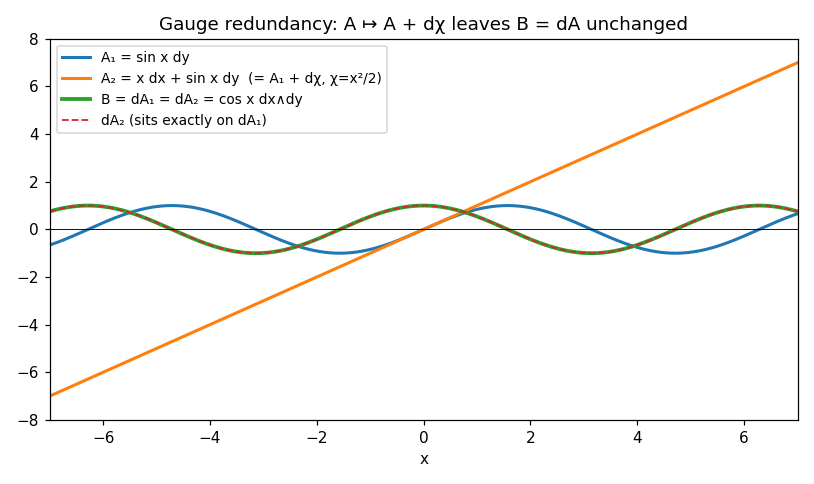
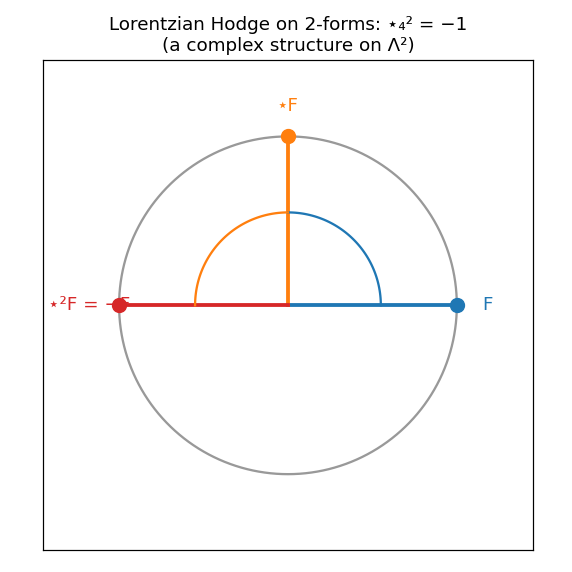
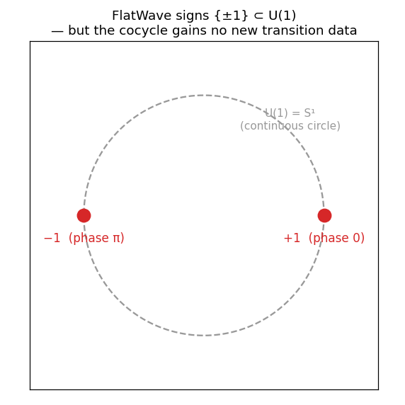
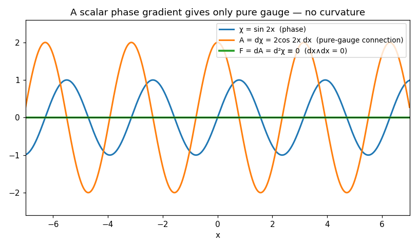
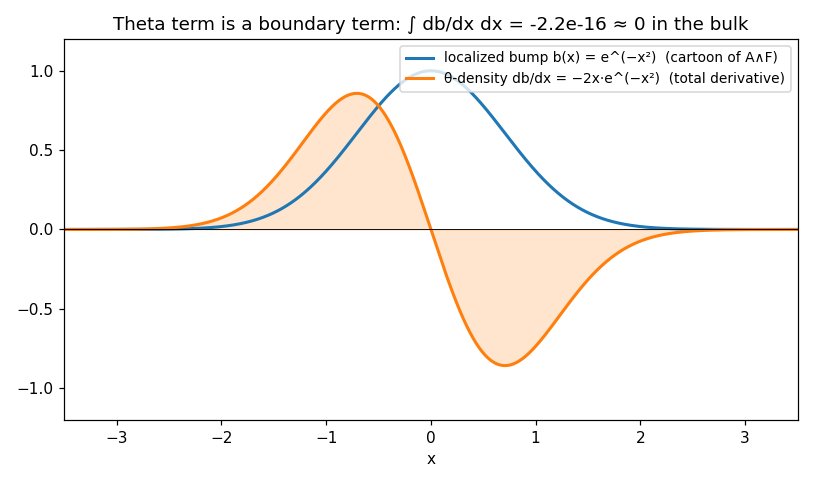
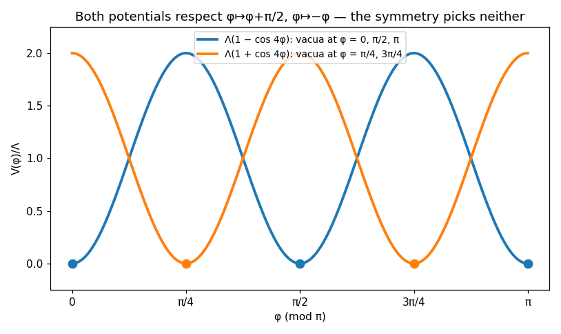
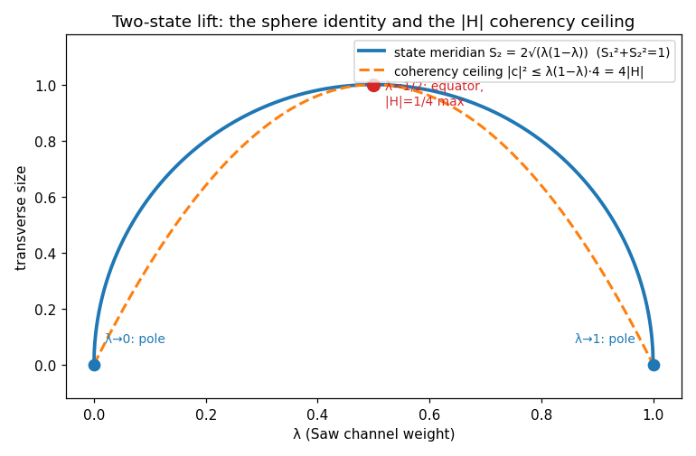
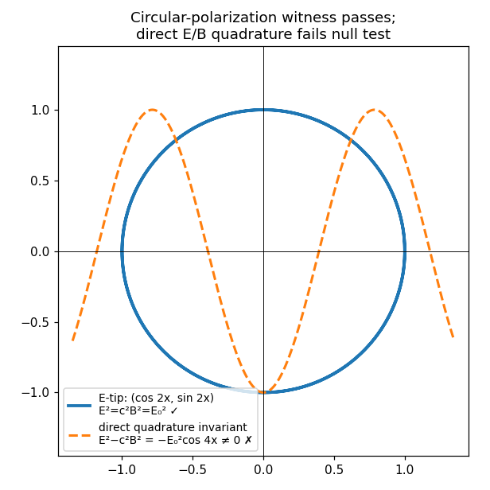

Book 8 — Pre-Maxwell Geometry and the Compact-Carrier Field Boundary
A restructured rewrite of R Theory — Volume II, Book 8. Pictures first, then the audit.
About this rewrite. This is a restructuring of Book 8, not a new result. Every theorem,
ledger entry, and status label below comes from the original manuscript; no mathematics has been added.
What changed is the order of presentation:
Part I shows the mathematics — graphs first, intuition second, with each picture pointing
to the section that proves it. Part II runs the dependency audit: what is inherited, what is declared, what is imported. Part III lists every theorem with exactly one scope label. Part IV closes the book with the closure ledger: established, conditional, not derived.
Intuition is labeled as intuition. Theorems are labeled as theorems. Scope tags are the
auditor's, applied under Kit's rule: report only what the math has proven.
Each graph below is a live Desmos calculator — drag, zoom, and trace it. If Desmos
can't load, a static image is shown instead, generated from the same formulas and numerically
asserted. Honesty note: live Desmos rendering could not be browser-verified from this
workstation (no live browser available); the PNG fallbacks are provided and every plotted
identity was executed and checked with real assertions.
Book 8 asks one question: how much electromagnetic-looking structure follows from the
mathematical carrier before Maxwell dynamics is admitted? The answer, in brief:
exterior closure and gauge redundancy come free; a Lorentzian Hodge star must be declared;
continuous local U(1) cannot be squeezed out of FlatWave's discrete signs; and Maxwell's
equations become essentially unique only inside an explicitly declared candidate class.
Eight pictures, one per section.
§1. Different potentials, same field

Figure 1. In two dimensions, A₁ = sin x·dy (blue)
and A₂ = x·dx + sin x·dy = A₁ + dχ with
χ = x²/2 (orange) are different one-forms, but
B = dA₁ = dA₂ = cos x·dx∧dy (green; the red dashed copy of
dA₂ sits exactly on top of it). The added piece
dχ is invisible to the field because
d²χ = 0. Live in Desmos.
Think of the potential A as a landscape and the field
B = dA as its slope pattern. Adding a pure gradient
dχ — a tilt with no curl of its own — reshapes the landscape
without changing any slope reading. That is gauge redundancy: the redundancy is in the
description, not the physics, and it follows from d² = 0 alone,
with no metric, no dynamics, and no electromagnetism.
STANDARD IMPORTED THEOREMFormal home: §8.1, Theorem 8.1.T1. d² = 0, gauge invariance
of B = dA, and dB = 0 are ordinary
exterior calculus. Corollary 8.1.C1 (grad/curl/div in form language) is ordinary Euclidean
vector calculus. Calling A a vector potential or
dB = 0 a no-monopole law requires a separate electromagnetic
projection contract — the manuscript states this firewall explicitly, and the audit keeps it.
§2. A quarter-turn that must be declared

Figure 2. On 2-forms in Lorentzian signature the Hodge star acts like a
quarter-turn: ⋆F (orange) is F (blue)
rotated 90°, and ⋆²F = −F (red). Two quarter-turns make a
half-turn — a complex structure on the space of 2-forms. Live in Desmos.
In ordinary 3D Euclidean space, the Hodge star applied twice gives you back what you
started with (⋆₃² = +1). Declare a Lorentzian metric — one minus
sign among the four directions — and on 2-forms the star squares to minus the
identity. That minus sign is a complex structure: it lets 2-forms behave like complex
numbers. But nothing in the Euclidean carrier forces the Lorentzian signature; it is a
declared geometric extension, and the book labels it as such.
ASSUMPTION / DECLARED EXTENSIONFormal home: §8.2, extensions 8.2.E1 (independent fourth direction
τ) and 8.2.E2 (oriented Lorentzian metric).
STANDARD IMPORTED THEOREM Given the declared metric,
⋆₄² = −1 on 2-forms is standard Lorentzian geometry (verified by
direct matrix computation in the audit).
MANUSCRIPT ASSERTION The constitutive boundary:
G = λ⋆₄F is a constitutive identification and
dG = J a sourced field law — neither is forced by exterior
calculus. Conditional Corollary 8.2.C1 (dJ = 0 from
dG = J) is a CHECKED PROOF.
§3. Two dots are not a circle

Figure 3. FlatWave's transition data are the two signs
{+1, −1} (red dots: phase 0 and phase π) sitting inside the
continuous circle U(1) (gray). Renaming the dots as complex
phases does not fill in the circle: no continuous fiber coordinate, no infinitesimal
phase transformations, and no connection are created by the relabeling.
Live in Desmos.
FlatWave hands you a coin — heads or tails at each overlap of charts. You may call
heads "phase 0" and tails "phase π", embedding the coin in the circle of all phases.
But you still only ever see heads or tails: the embedding manufactures no new
transition functions e^{iχ(x)}, no way to rotate the phase by a
tiny amount, and no gauge field. Continuous local U(1) is a strictly larger datum and
must be declared, not derived, from the discrete signs.
CHECKED PROOFFormal home: §8.3, Negative Theorem 8.3.N1 and Corollaries 8.3.C1–C2. The argument
is definitional and complete: the inclusion {±1} ⊂ U(1) does
not enlarge the inherited Čech transition data. Likewise the carrier phasor
Zcar = e^{2ix} becomes a gauge phase only after an
independent local redundancy is supplied — packaging a phase into
S¹ is not the same as gauging it.
§4. A phase gradient carries no curvature

Figure 4. Start with a spacetime-dependent phase
χ = sin 2x (blue). Its gradient
A = dχ = 2cos 2x·dx (orange) is a connection — but a
pure-gauge one: its curvature F = dA = d²χ ≡ 0 (green,
flat) vanishes identically, because dx∧dx = 0. A scalar phase
gradient alone never makes local field curvature. Live in Desmos.
Suppose a complex field's phase is allowed to be redefined independently at each
point — local phase redundancy. Then the ordinary derivative stops comparing
phases correctly, and a compensating field A is forced into
existence: the Abelian connection, transforming as A ↦ A + dχ.
Its curvature F = dA is gauge invariant and closed. But notice
what the theorem does not give you: it does not give you the charged field, the
redundancy itself, the coupling, the signature, or any dynamics. The connection is
forced after the redundancy is declared — the declaration is the price of
admission.
CHECKED PROOFFormal home: §8.4, Lemma 8.4.L1 and Theorem 8.4.T1. Verified by direct symbolic
computation: dψ′ = e^{iqχ}(dψ + iq·dχ·ψ),
covariance forces A′ = A + dχ,
D²ψ = −iqFψ with F = dA, and
dF = 0.
ASSUMPTION / DECLARATION The local phase equivalence
ψ ↦ e^{iqχ(x)}ψ itself (8.4.E1) is declared, not derived —
the book's status firewall says so explicitly.
§5. The theta term sees only the boundary

Figure 5. A cartoon of Lemma 8.5.L2 in one dimension: the theta-term
density is a total derivative db/dx (orange) of a localized
bump b(x) (blue). Its positive and negative lobes cancel
exactly — the bulk integral is ≈ 10⁻¹⁶ — so a constant theta
coefficient contributes only at the boundary and never alters the bulk equations.
Live in Desmos.
Inside the declared candidate class — local, quadratic in F,
no derivatives of F, constant coefficients — there are only two
possible terms: F∧⋆F (parity even) and
F∧F (parity odd). But the odd one is a total derivative,
F∧F = d(A∧F), so with constant coefficient it slides off to
the boundary and drops out of the bulk equations. What survives in the bulk is unique
up to normalization: the Maxwell action, giving d⋆F = 0
alongside the identity dF = 0. Uniqueness within the
class — nonlinear, higher-derivative, non-Abelian, and lattice theories were never
in the room.
STANDARD IMPORTED THEOREMFormal home: §8.5, Lemma 8.5.L1 (the two quadratic 4-forms — standard invariant
theory).
COMPLETED SYMBOLIC CHECK Lemma 8.5.L2:
F∧F = d(A∧F) verified by exact symbolic computation on test
1-forms.
MANUSCRIPT ASSERTION Theorem 8.5.T1 (candidate-relative
Maxwell uniqueness) and Conditional Corollary 8.5.C1 (source coupling
a·d⋆F = J with dJ = 0): conditional
theorems whose proof ingredients are standard, but whose candidate-class boundary is a
manuscript declaration. The projection status is explicit — this does not promote
Maxwell theory into a theorem of the carrier calculus.
§6. The symmetry that refuses to choose

Figure 6. Both potentials respect the certified discrete symmetries
φ ↦ φ + π/2 and φ ↦ −φ, yet their
vacua (dots) sit in different places: Λ(1 − cos 4φ) (blue)
is minimal at φ = 0, π/2, π, while
Λ(1 + cos 4φ) (orange) is minimal at
φ = π/4, 3π/4. The symmetry restricts the shape of the
potential to harmonics of cos 4φ but selects neither the sign
nor any coefficient. Live in Desmos — check the minima.
Promote the carrier phase to a compact scalar field
φ: M → ℝ/πℤ on a declared Lorentzian spacetime. The most
general two-derivative action is then
S = ∫√−g·[−½K(φ)(∇φ)² − V(φ)] — no other terms are possible,
and the book writes down its equation of motion and stress tensor exactly. Imposing the
carrier's discrete symmetries forces K and
V to be built from a single invariant,
C = cos 4φ. But "built from cos 4φ"
still leaves every harmonic's coefficient free — including the sign of the first one.
Two fully symmetric potentials can have inequivalent vacuum pairs. Symmetry classifies;
it does not select.
COMPLETED SYMBOLIC CHECKFormal home: §8.6, Theorem 8.6.T1 — the Euler–Lagrange equation
K□φ + ½K,φ(∇φ)² − V,φ = 0 and the stress
tensor Tμν = K∂μφ∂νφ −
gμν[½K(∇φ)² + V] verified by exact symbolic computation.
CHECKED PROOF Theorems 8.6.T2 (Fourier restriction to
cos 4nφ; the identities
C = X² − Y² = 4Vcar² − 16H² = 1 − 32H² = 8Vcar² − 1
verified numerically) and 8.6.T3 (one-dimensional metric flattening; the change of
variables verified numerically).
MANUSCRIPT ASSERTION Negative Theorem 8.6.N1
(non-uniqueness of the interaction) and Conditional Corollary 8.6.C1 (round-metric
selection principle) — argued completely in the text; the selection principle is a
further declaration, not a theorem of the carrier alone.
STANDARD IMPORTED THEOREM §8.7: the free-field,
winding (∮w ∈ ℤ), and null-sector results are standard scalar
field theory after the declared premises; the wave identity
□Z = 2iZ□φ − 4Z(dφ)² is a
COMPLETED SYMBOLIC CHECK, and each of the five null-carrier
items (8.7.T4) is a CHECKED PROOF.
§7. A sphere capped by the carrier

Figure 7. Declare the two Saw magnitudes to be the diagonal weights of
a normalized two-state system. The state then lives on a sphere
(S₁² + S₂² + S₃² = 1; blue arc is the
φ = 0 meridian), and the off-diagonal coherence is capped by
the carrier itself: |c|² ≤ λ(1−λ) = |H| (orange dashed
ceiling, i.e. S₂² + S₃² = 4|H|). At
λ = 1/2 the state sits on the equator and
|H| = 1/4 is maximal; at the poles the transverse size
vanishes. Live in Desmos.
This is the book's most striking landing. Take the two complementary Saw weights,
use them as the diagonal of a 2×2 coherency matrix, and ask how large the off-diagonal
coherence can be. Positive semidefiniteness answers: at most
λ(1−λ) — which is exactly |H|, the
reciprocal carrier quantity from Book 2. The same H = 1/(urx+uxp)
that fell out of the reciprocal calculus now caps the transverse radius of a Bloch
sphere and sets the angular coefficient of the Fubini–Study metric,
ds² = dλ²/(4|H|) + |H|dφ². But one scalar still cannot trace
out the sphere's full curvature (dλ∧dφ = 0 when both are
functions of x alone) — the missing datum is an independent
relative phase, and the book refuses to smuggle it in.
CHECKED PROOFFormal home: §8.7A, Theorems 8.7A.T1–T3 and Negative Theorem 8.7A.N1. The sphere
identity is elementary algebra; the coherency ceiling follows from
det J = λ(1−λ) − |c|² ≥ 0; the Fubini–Study coefficients were
verified numerically by finite differences of the normalized state
(gλλ = 1/(4|H|),
gφφ = |H|, off-diagonal zero); the one-scalar
obstruction is dx∧dx = 0. All conditional on the declared
two-state lift — the manuscript's status qualification is preserved verbatim: this
does not make H an electromagnetic coherence.
Textual slip (minor): the displayed line reads
ds² = −|⟨ψ|dψ⟩|², omitting the
⟨dψ|dψ⟩ term; the proof text ("subtract the vertical phase
component") and the resulting metric are correct.
§8. The witness that passes — and the guess that fails

Figure 8. The naive guess E = E₀sin 2x,
cB = E₀cos 2x gives
E² − c²B² = −E₀²cos 4x (orange dashed) — wobbling, not
identically zero, so it fails the vacuum null-field test. But the normalized carrier
does fit a circularly polarized wave exactly: the electric tip traces the unit
circle (C, S) = (cos 2x, sin 2x) (blue) with
E² = c²B² = E₀²,
E·B = 0, E×B = (E₀²/c)k̂ — once the
vacuum EM frame, amplitude, propagation direction, and
B = (k̂×E)/c are imported. Live in Desmos.
Two electromagnetic experiments, opposite outcomes. Assign the double-angle
quadratures directly to field magnitudes and the null invariant
E² − c²B² oscillates instead of vanishing — no-go, by direct
computation. But feed the normalized carrier
(C, S) = (cos 2x, sin 2x) into the standard
circular-polarization template and every invariant lands exactly. The difference is
the import contract: the witness imports the transverse frame, the amplitude, the
propagation direction, and the vacuum relation between E and
B. What is proved is compatibility — a representation
witness — not a derivation of electromagnetism, of c, or of
a preferred helicity.
COMPLETED NUMERICAL CHECKFormal home: §8.7B, Negative Theorem 8.7B.N1:
E² − c²B² = −E₀²cos(4x) ≢ 0 verified numerically.
CHECKED PROOF Conditional Theorem 8.7B.T1: all five
witness identities verified numerically from C² + S² = 1 and
the imported cross-product construction, for both helicity signs
σ = ±1 — and the theory selects neither.
CHECKED PROOF §8.7B.3 rank obstruction:
A = g(x)dx ⇒ F = 0, and
A = Σfa(x)θa ⇒ F∧F = 0, verified
numerically. The orientation firewall (§8.7C.2) stands: FlatWave sign, helicity, frame
orientation, mirror, projective sign, and charge sign remain distinct.
Part II — Then earn it: the dependency audit
Volume II inherits only results already earned in Volume I (Books 0–6), plus
ordinary background mathematics and explicitly named physics imports. Here is what Book 8
actually leans on, and the status of each support.
From Volume I (checked against the audit ledger)
CHECKED PROOFBook 2 algebraic spine —
H = 1/(urx+uxp) = sin(2x)/4,
Zcar = 2V + i·4H = e^{2ix},
FlatWave = 1/urx + 1/uxp = sgn(sin 2x) and the reciprocal
identities were verified independently to ~10⁻¹³. Book 8's §8.7C re-states
H = sin(2x)/4 and C + iS = e^{i2x}
from this earned core.
CHECKED PROOFFlatWave transformation laws —
FW(θ+π/2) = −FW(θ), FW(θ+π) = FW(θ),
deck-blindness — independently verified. These ground the "certified quarter-turn and
reflection actions" invoked in §8.6.
STANDARD IMPORTED THEOREMExterior calculus,
Hodge duality, vector calculus — d² = 0,
⋆₃² = +1, ⋆₄² = −1 (Lorentzian),
grad/curl/div in form language. The manuscript re-derives standard material; credit
belongs to the literature.
MANUSCRIPT ASSERTIONThe Flower Euclidean
endpoint — §8.1 uses the revised Flower construction "through its revised Euclidean
endpoint." The Volume I ledger records the synthetic Flower proofs (Book 4) as read but
not machine-checked. Book 8's use is honest about this: no lattice structure is retained
as a preferred substrate, and the twelve-neighbor Laplacian appears in §8.7C.3 only as
an unpromoted hypothetical.
MANUSCRIPT ASSERTIONFlatWave Čech data —
§8.3's εij ∈ {±1} with
εijεjkεki = 1 rests on the
Book 3 transition-cocycle computations, which the ledger records as read but not
independently checked. The no-go argument built on them (§8.3.N1) is complete as
given.
From Book 7 (Volume II — outside the Volume I ledger)
COMPLETED NUMERICAL CHECKBalance-product,
cosine companion, transfer–carrier map, carrier phasor — Book 8's §8.7C and §8.7A
import H = ελ(1−λ),
cos(2x) = ε(1−2λ)√(1+4λ(1−λ)),
U + iW = ε(a+ib)² as proved in Book 7 §7.1. These are
not in the Volume I ledger (Book 7 is Volume II), so their "proved" status
depends on the Book 7 audit, not on this one. This audit verified each identity
numerically on the transfer chart (4000 sample points, max error < 10⁻¹⁰) —
including the subtle point that λ here is Book 7's transfer
coordinate λ = ε·(1/urx) ∈ (0,1), not the closed-form
(1+sin x−cos x)/2 outside its principal branch. With the
correct coordinate, all four identities hold; with the naive closed form, the cosine
companion fails (e.g. at x = 9π/8). The manuscript is
consistent on this point — the dependency bridge names Book 7 §7.1 explicitly.
Declared, not derived
ASSUMPTION / DECLARED EXTENSION The independent
fourth direction τ (8.2.E1), the oriented Lorentzian metric
(8.2.E2), the local phase redundancy ψ ↦ e^{iqχ(x)}ψ (8.4.E1),
the compact-scalar lift φ: M → ℝ/πℤ (8.6.E1), the normalized
two-state lift (8.7A.1), and the candidate action class (8.5.C) are all explicit
declarations. The book never presents them as consequences of the carrier.
PHYSICS IMPORT The vacuum electromagnetic frame
(transverse pair e₁,e₂, k̂ = e₁×e₂,
amplitude E₀, c,
B = (k̂×E)/c), charge/current ontology
(q, J), and Lorentzian spacetime as
a physical arena are named imports. Per the volume's governing status rule, the
circular-polarization witness (§8.7B.T1) and the Maxwell uniqueness theorem (§8.5.T1)
are therefore conditional reconstructions, never derivations of physical law.
The prediction-difference set remains empty (§8.7C.3).
Part III — Every claim, one scope label
Claim
Scope
Basis
8.1.T1 Euclidean exterior closure
STANDARD IMPORTED THEOREM
Verified on test forms; ordinary exterior calculus
All five identities verified; EM frame imported; neither helicity selected
8.7B.3 single-scalar rank obstruction (F∧F=0)
CHECKED PROOF
Verified numerically on test configurations
Part IV — Close the book
BOOK 8 CLOSURE LEDGER (from §8.8, scope-annotated by the audit)
CERTIFIED OR RE-PROVED, no new electromagnetic physics:
• Euclidean exterior closure and spatial Hodge structure [STANDARD]
• Metric-free F=dA ⇒ dF=0 after a 4D carrier is declared [STANDARD, conditional on declaration]
• FlatWave's Z2 transition character and the no-go to continuous local U(1) [CHECKED PROOF]
• Book 7's balance-product, cosine companion, transfer-carrier map, carrier phasor
[COMPLETED NUMERICAL CHECK here; "proved" status depends on the Book 7 audit]
• Abelian connection forced by declared local phase redundancy [CHECKED PROOF, conditional]
• Scalar action class, E-L equation, stress tensor [COMPLETED SYMBOLIC CHECK]
• Null scalar-wave sector [CHECKED PROOF] — scalar radiation-like structure, not EM
• Bloch/CP1 sphere identity, coherency ceiling |c|^2<=|H|, Fubini-Study metric [CHECKED PROOF, conditional on two-state lift]
• Circular-polarization witness [CHECKED PROOF, conditional on EM import]; direct quadrature fails [COMPLETED NUMERICAL CHECK]
CONDITIONAL on declared geometry / field-theory premises:
• star4^2=-1 on Lorentzian 2-forms [STANDARD given the declared metric]
• Maxwell bulk action unique within the declared quadratic class [MANUSCRIPT, conditional]
• Gauge-invariant source coupling requires dJ=0 [MANUSCRIPT, conditional]
• Winding sectors of the compact carrier [STANDARD]
NOT DERIVED in Book 8:
physical time; Lorentzian signature as a fact about nature; electric charge or
current ontology; empirical identification of F with measured E and B fields;
eps0, mu0, vacuum impedance, c; a unique carrier potential; transverse photon
polarizations; nontrivial local U(1) from FlatWave or complex notation alone;
quantum dynamics; any nonempty Projection-specific empirical prediction set.
VERDICT: reciprocal EM representation — passed; normalized phase/polarization
compatibility — passed conditionally; homogeneous gauge closure after F=dA —
passed structurally; generic EM curvature from one R scalar — obstructed;
sourced Maxwell dynamics from the reciprocal scalar calculus alone — not derived;
preferred charge sign or helicity — not derived; nonempty Projection-specific
empirical prediction set — not yet earned.
MANUSCRIPT ASSERTIONDependency lock Book 8 → Book 9 (from the source): Book 9 may inherit the
carrier, projective geometry, rank obstructions, and the distinction between scalar
phase, coframe, connection, and curvature. Lorentzian spacetime and gravitational field
equations are not supplied by Book 8 and enter Book 9 through explicit imports stated
there. The audit confirms this lock is consistent with the book's actual dependency
posture — nothing in Book 8 derives a physical spacetime.